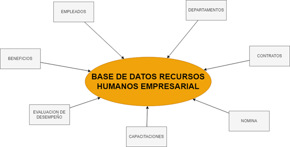
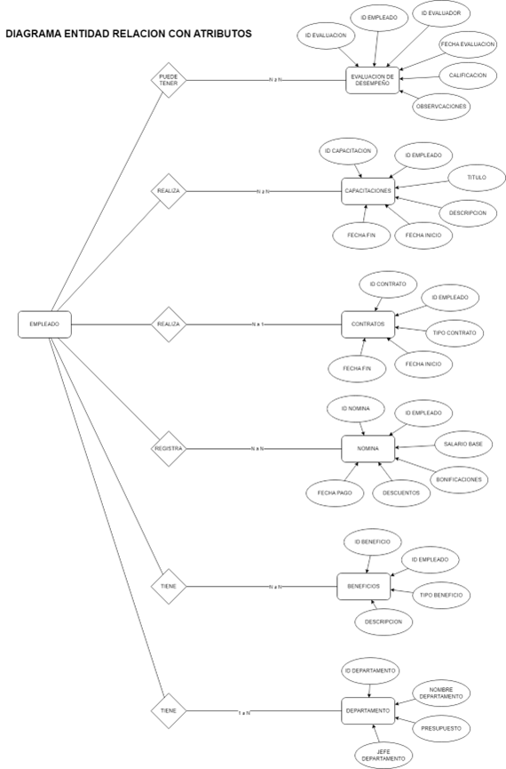
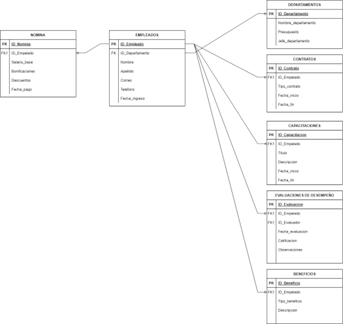

LABORATORIO NUMERO TRES
La base de datos de recursos humanos empresarial gestiona información crítica sobre los empleados, sus relaciones laborales, la administración de nómina, los programas de capacitación, las evaluaciones de desempeño y los beneficios que la empresa ofrece. Las consultas de acción son esenciales para mantener y actualizar esta información de manera precisa y eficiente. A través de estas consultas, se pueden realizar cambios, insertos, y consultas complejas para gestionar los datos empresariales.
Realización
Empleados están vinculados a departamentos, donde desempeñan sus funciones. Contratos gestionan los detalles legales de la relación laboral entre los empleados y la empresa. La nómina gestiona los pagos, bonificaciones y descuentos de los empleados. Capacitaciones y evaluaciones de desempeño son clave para el desarrollo y evaluación continua de los empleados. Beneficios reflejan los incentivos adicionales que recibe el empleado, como seguros, vacaciones o bonos.
Tablas
- Empleados -> Departamentos: Cada empleado pertenece a un departamento específico.
- Empleados -> Contratos: Cada empleado tiene uno o más contratos asociados, con detalles sobre la vigencia y el tipo de contrato.
- Empleados -> Nómina: La nómina contiene el registro del salario y los pagos efectuados a cada empleado.
- Empleados -> Capacitaciones: Los empleados pueden estar registrados en una o más capacitaciones.
- Empleados -> Evaluaciones de Desempeño: Cada empleado recibe evaluaciones de desempeño periódicas, que son registradas y calificadas.
- Empleados -> Beneficios: Cada empleado tiene acceso a uno o más beneficios laborales.
Presentacion Final
Conclusión Final
Las consultas de acción desempeñan un papel crucial en la administración de los datos dentro de la base de datos de recursos humanos empresarial. Permiten la actualización constante de la información sobre empleados, su contratación, capacitación, evaluaciones y beneficios. Un manejo eficiente de estas consultas facilita una gestión más organizada, precisa y adaptable, ayudando a la empresa a cumplir con sus objetivos operativos y estratégicos en términos de gestión del talento humano.
Regresar...